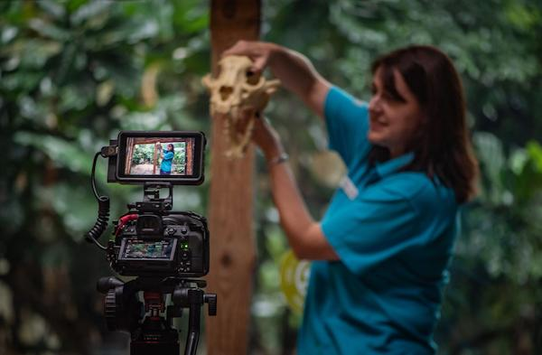
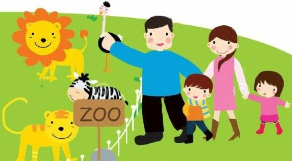
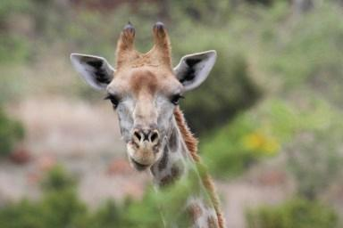

The Dehiwala National Zoo, which has a remarkable collection of exotic and indigenous fauna, is one of the oldest Zoos in Asia. The Zoo in Sri Lanka is widely known as Colombo Zoo all over the world.This was started by Mr. John Hargenbergin early 1920's as a privet collectin in 11 acres. It was officially taken over govenment on the 1st of july 1936. Dehiwala Zoo is located in Colombo district of Wesern province.There are more than 3000 animals belongs to 72 species of Mammals, 65 species of Birds, 31 species of Reptiles, 89 species of Fish, 03 families of Amphibians and 30 species of Butterflies etc. The annual revenue is LKR 40 million.
Dehiwala Zoo covers an area of 10.1 hectares and is a member of World Association of Zoos and Aquariums(WAZA). Annually, over one and half million local and foreign tourists visit the Zoo. And over 2000 students and groups of students from schools and universities visit the Zoo for educational purposes. Their vision is to become an institution which maintains the best zoological garden in the world.
VIRTUAL VISITS
Don't miss out, there is a valuable chance to watch our original live zoo days. We also have been going live on our youtube and facebook pages for a whole day.
You can visit how zookeepers treat our animals, how they spent theire life in our zoo with thire lovely guardians....A virtual zoo experience for the very first time in SRI LANKA.
WHAT A AMAZING EXPERIENCE FOR YOU! HURRY UP! Visit us with your lovely family and friends and stay safe at your own place specially in this pandemic situation.
- Webcams and live streams
- Animal antics
- Zoo keeper videos
- Special events
A GREAT NATURAL EXPERIENCE FOR KIDS
Child vistors are providing many enjoying oppotunities inclueding swings, maslides, tree hows etc. in the kids zone. In our special virtual sessions, child are provided educational programs about animals and plants with our special environmentalists. Bring the experience of an interesting educatioal trip with full of fun closer to your lovely kids safely from home.
Want your students to visit the Zoo from your online classroom? Talk to us about a virtual Zoo Learning Session! From webinars with your class to interactive activities with our Educators, we are keen to work with you to make a virtual Zoo experience part of your students’ learning during this time.
BEST TIME TO VISIT
The best time to visit the Dehiwala Zoo is in winter or the dry season when there is less to no rainfall in the country. The winter months from October to February have soothingly cold temperatures and no humidity in the air. This would fit perfectly for you to wander around the zoo and not feel uneasy unlike summer months with hot temperatures and high humidity levels.
However, in the day time, one should visit as early as the zoo opens as it is the least crowded time of the day and plus you will get to roam around comfortably without having to worry about the closing time.
Lastly, although the closing time of the zoo is 06:00 PM, the entry for the visitors closes by 05:30 PM sharp. So do not visit if you are not reaching the zoo on time. Moreover, you wouldn’t be able to enjoy the zoo in half an hour, so plan early.